Greenwich Village Halloween parade in the 80s.
Greenwich Village Halloween parade in the 80s.

Subway 1980
E. 122nd Street, 1979

Outside Grand Central, 1979

Times Square, 1979, advertising Richard Pryor
Times Square, 1982

Brooklyn in 1982, looking at Manhattan.

Busted! Lower East Side, 1984
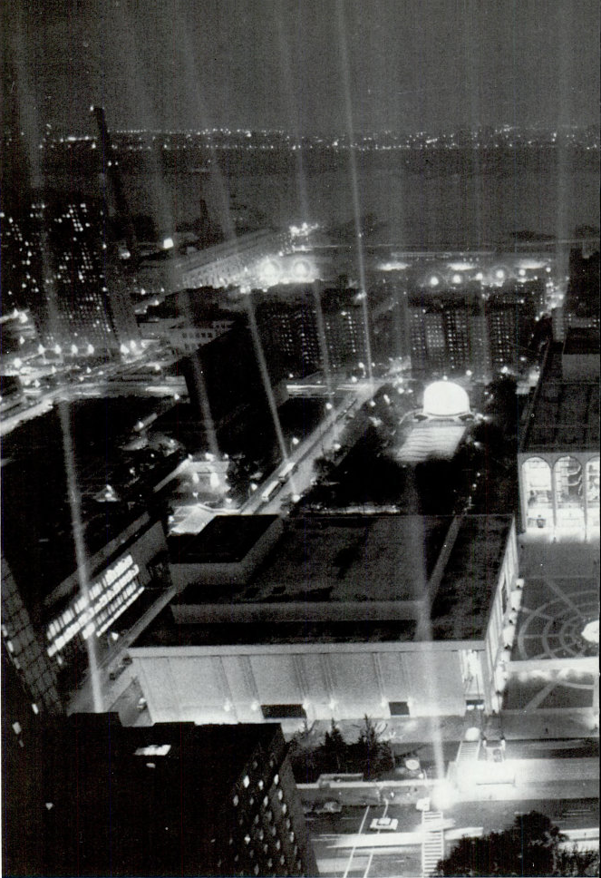
Lincoln Center’s 25th birthday bash, 1984

The Empire State Building, under construction in 1930.
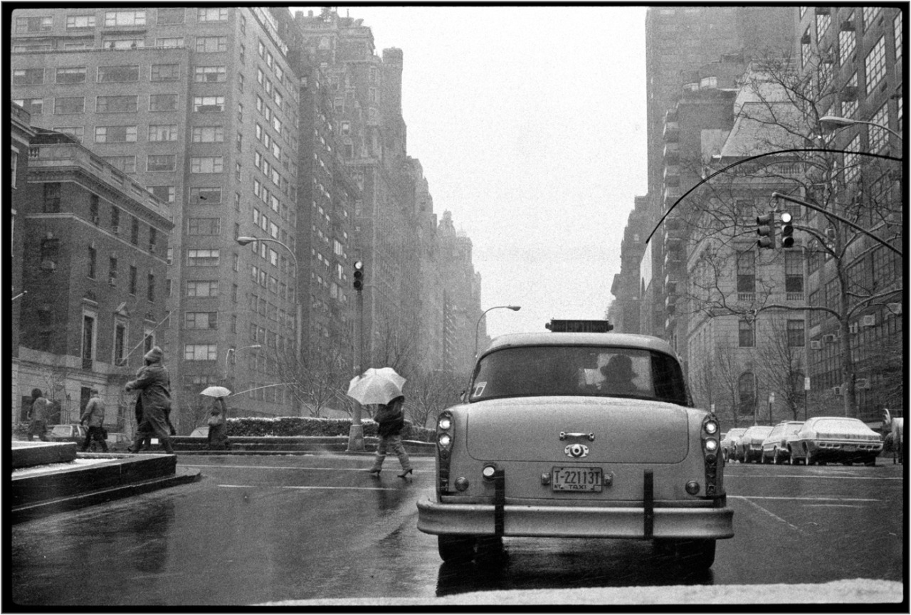
Park Ave, 1987
Random footage of NYC, 1987

Gordon Parks Harlem Neighborhood, New York City 1948
Looking South down Park Avenue, at 88th Street. 1941.

New York Public Library, 1976
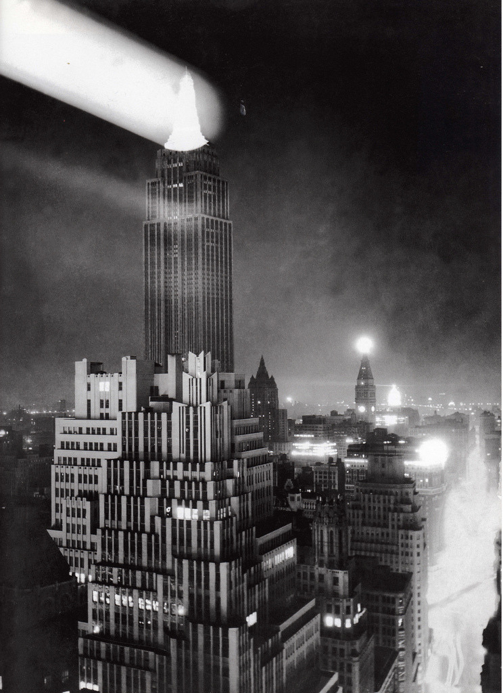
Empire State Building 1931
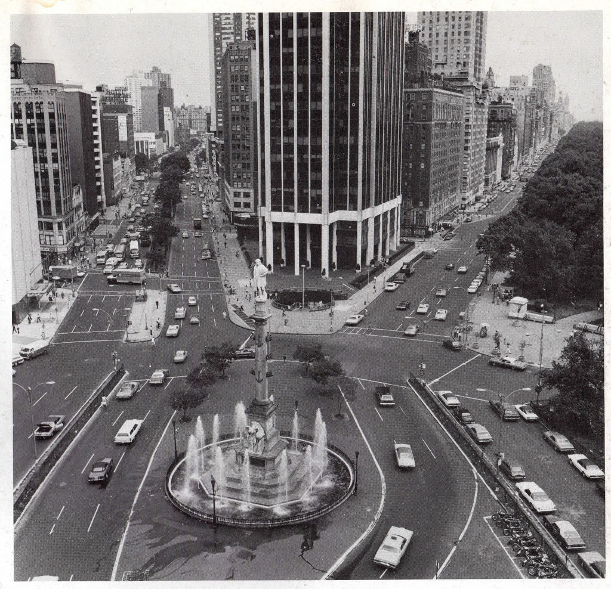
Columbus Circle, 1975

Rooftop sunbathers overlooking Central Park, 1977

The Irving Trust Building and Trinity Church, 1973

The Thalia, 1986

People Jam At 38th And Fifth 1978

NYC
Getty Images
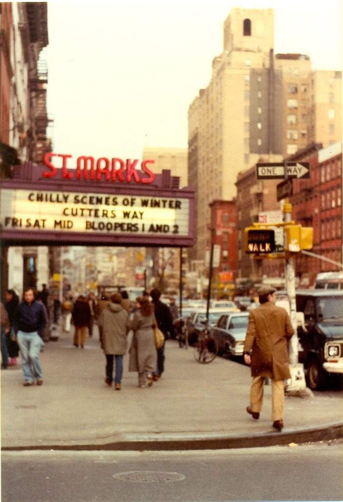

St. Mark’s Cinema, 1980s
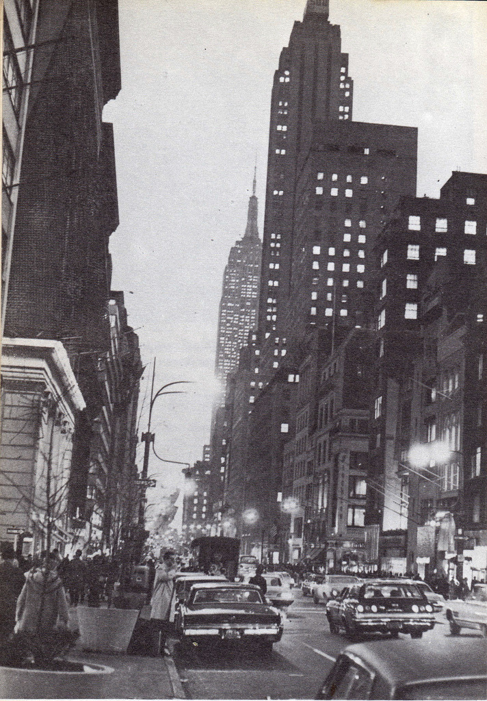
5th Ave, 1969
Financial District, 1976
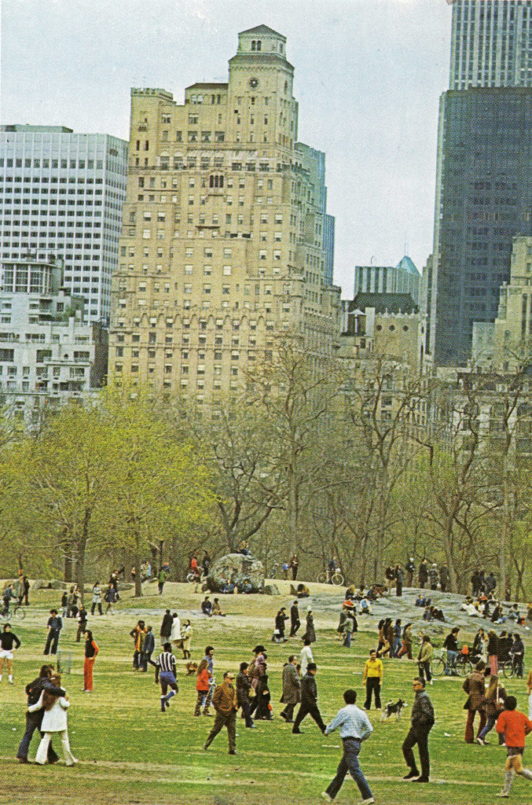
Central Park, Spring 1971
Old 6 train, salvage. Taking of Pelham 123!

Love in Central Park, 1969
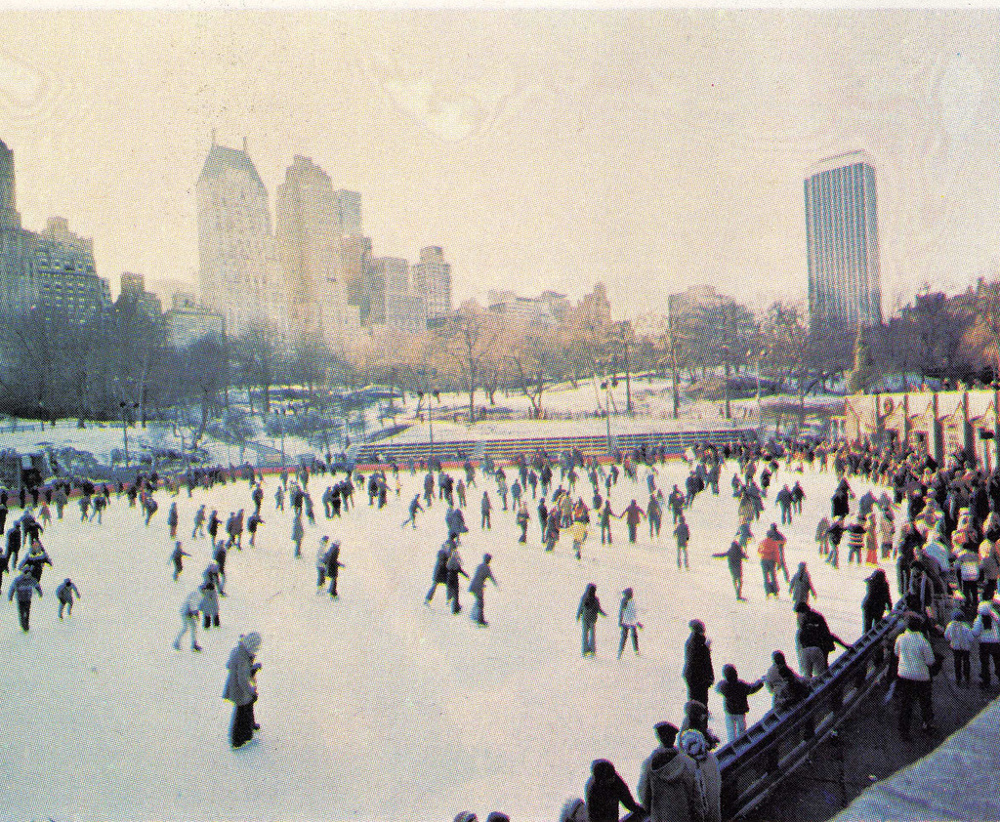
Skating in Central Park, 1971

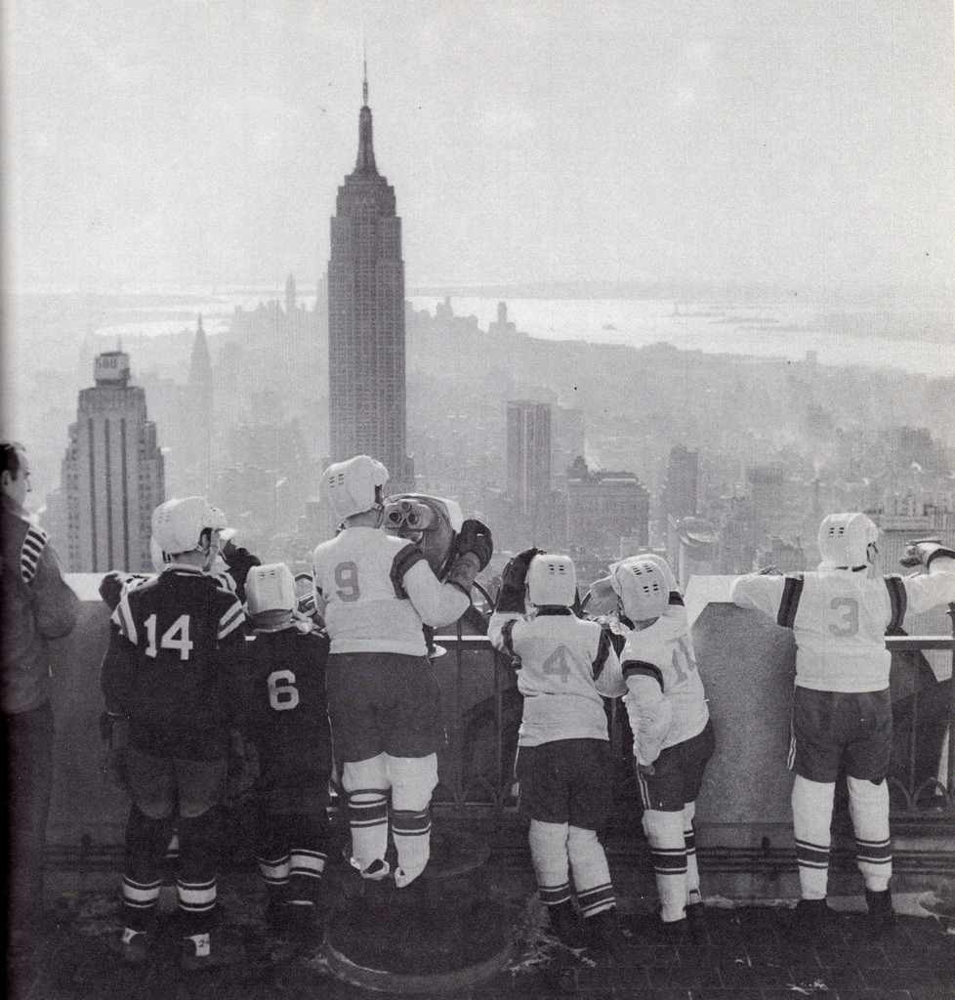
Young hockey teams look at the Empire State Building, 1969

91st Street, facing East towards Amsterdam Ave., 1979

New York City, 1976 Elliott Erwitt

666

Watching the World Trade Center get built

Francoise Hardy and musicians in Central Park, 1969
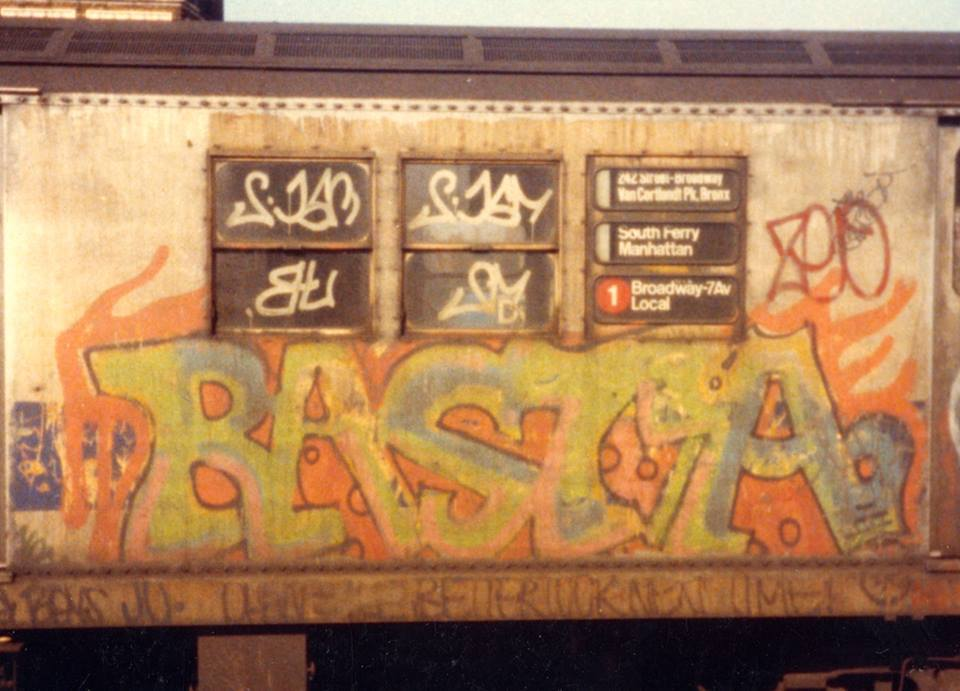
Early Rasta

Victory Theater, 209 West 42nd Street Photo by Langdon Clay
Circa 1978 (the year Pussycat Ranch was released)

Downtown Manhattan, 1984
New York, 1940’s.
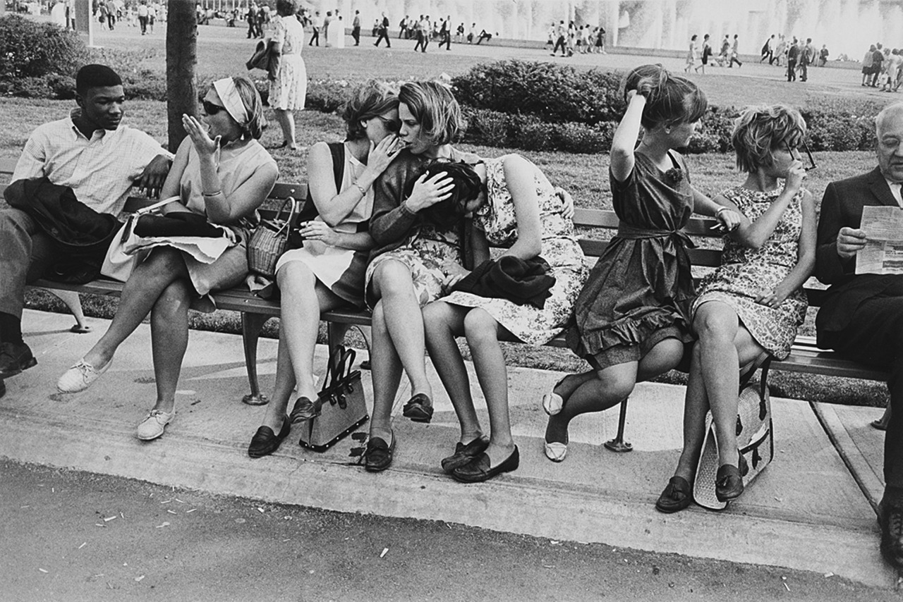
Chillin’ at the 1964 World’s Fair

Funky cop car in Times Square, 1971

Stephen Salmieri (American, born 1945). “Coney Island,” 1969. Gelatin silver photograph Brooklyn Museum, Gift of Edward Klein, 82.201.32. © Stephen Salmieri
Times Square 1971

50’s POLICE

Times Square 1971

7th Ave and Greenwich Ave, 1976. St. Vincent’s Hospital on the left.
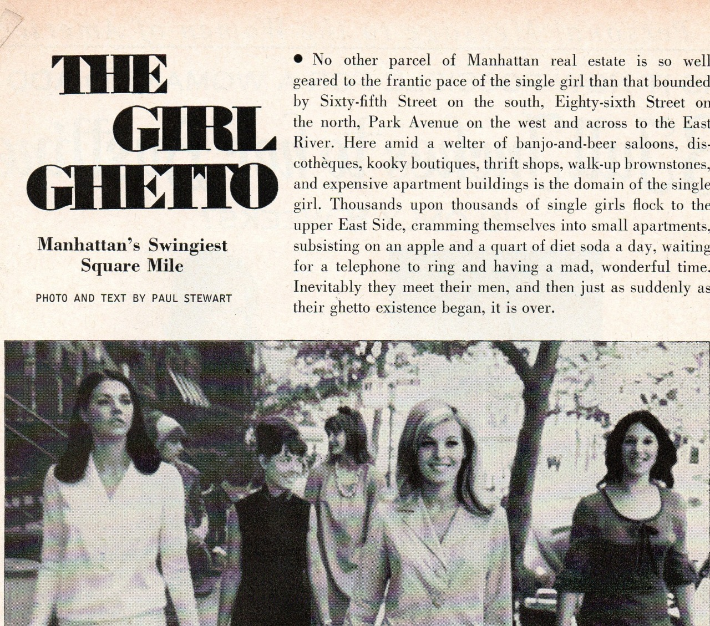
Manhattan’s swingiest square mile: the upper East Side
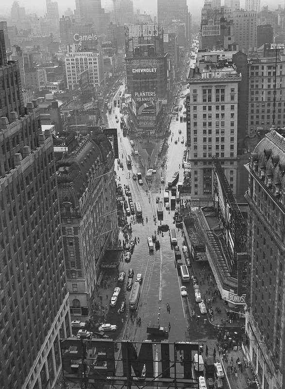
Times Square in the rain, 1940s © Lou Stoumen